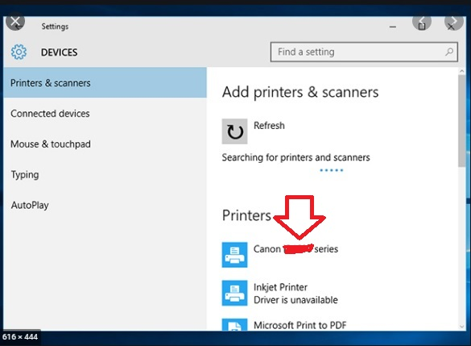

Canon IJ setup -step by step complete information
If you are new to IJ Start Canon printer, then before start printing, faxing, or scanning documents, you need Canon IJ Setup. To get the best printing experience with your Canon printer, you are strongly suggested to connect the printer to a wireless network and install the latest version of printer software drivers on your Windows system. Doing this will be allowed to print, scan and copy the documents without any kind of disruption. In this guide, we will walk you through some simple and effective guidelines that can help you to successfully setup your IJ Start Canon Printer on your device. Thus, read the post carefully from top-to-toe and complete the setup process for your printer to avail additional benefits of the best printing services. Let’s do it!
We ‘Mirin Vol. 56: Bodybuilding Legends halotestin price the anti-bodybuilding hypertrophy program
Basic Requirements for Easy Canon IJ Setup:
- Once you go ahead with the printer setup process, always keep the exact model number of your printer in hand.
- Make sure that your computer or laptop has enough storage space so that with no hassle driver will be installed.
- Make sure the printer is properly plugged-in the power outlet.
- Your device has an active and strong internet connection.
- Make sure the network you are using is having WPA or WPA2 security protocol.
IJ.Start.Canon Printer Setup on Windows (Wireless)
Here is how to connect your IJ Start Canon Printer on Windows PC wirelessly:
- In the very beginning, you have to download and install your actual printer driver by visiting the site ‘Canon.com/ijsetup’.
- In the next step, you need to turn on your Canon printer and make sure that it is well plugged in with the power switch.
- Thereafter, go to the Download folder and double-tap on the downloaded file of driver setup to open it on Windows.
- Now, click on “Next” button till the time you see the option “Wireless Setup”.
- Select the “Wireless Setup” option, go to your Canon printer screen, and tap on “Wi-Fi Setup” button.
- Then, select the device settings and tap “OK” button.
- Next, Choose Device Settings > LAN Settings in the given sequence and then press “OK” tab.
- Next, select LAN Settings > Wireless LAN Setup and press “OK”. After doing this, your printer will search for the access point.
- Make sure that your Wi-Fi router is turned on. If it is on, the flash lamp will blink on the printer.
- Now, the network list will appear on the screen from which you have to select your Wi-Fi network from the given list and then hit “OK.”
- Afterward, you will be asked for your WPA/WEP security key (Wi-Fi password). Enter the correct password in the given field and then click “OK.”
- In a couple of minutes, your printer will directly connect to your Wi-Fi network.
- Congratulations! The Canon IJ printer has been wirelessly setup on your Windows system. Now, your printer is ready to serve quality printouts.
Setup IJ Start Canon Printer on Windows Via USB
Here is what you need to perform for making wired connection Setup IJ Start Canon Printer on Windows:
- First of all, you need to download the Canon printer driver & complete the installation process by following the on-screen prompts.
- Thereafter, connect your printer and Windows system via USB Cable.
- Open the “Control panel” from ‘Run’ dialog box from windows search option.
- Select “Devices and Printers” option.
- In the next window you will see Green check-mark on your printer.
- If in case your printer is not listed over there, immediately click “Add printer” to add your printer manually. By doing this you will see all available printers are listed on the screen.
- Select your Canon printer from there.

- Click “Next” button and wait for a few minutes to let the printer be added to the list.
- Once it is successfully added, you will see a green check-mark on your specified printer icon.
- At the end, your printer will be added to the printer list and now your printer is ready to deliver quality printouts from the connected system device.
Desired Procedure To Setup IJ Start Canon Printer on Mac
The beneath course of action will let you to effort freely complete IJ Start Canon Setup on MacOS. So, let’s follow them:
- The very beginning step you should take is to download and setup your printer driver via https://www.canon.com/ijsetup and then go for the next step.
- Now, on a serious note, go through the aforementioned steps provided in the first section of this write-up to put Canon printer on the same Wi-Fi network as your device.
- Thereafter, go to the “Apple” menu and click “System Preferences” tab.
- Place single click on the printer-shaped icon named “Printers and scanners.”
- Afterward, give a click on the “+” sign present near the bottom left corner of the screen.
- You can see your printer’s name in the left-hand pane if it is already connected over the network. Click on it to begin the setup process.
- Once the setup process gets completely done, your printer will be displayed with a Green check mark and will be ready to print.
Read Also: Canon Printer Setup and Installation Guide
Wasn’t This Helpful? Dial 24/7 Online Tech-Support Number
Don’t feel bad if you sincerely went through the given guidelines for your Canon IJ Setup but unfortunately yet not able to print from Windows or Mac. We are extremely talented and well-educated tech-specialists workday to night constantly to support you in a better way. So, dial the given helpline number anytime and connect with us without any fear. We will surely lend you a hand for this so in the blink of an eye you can setup your printer.
Frequently Asked Questions (FAQs)
What Is canon.com/ijsetup?
canon.com/ijsetup is a website specifically designed to provide a direct driver download link to Canon Printer users. This is a suitable platform where you can find your compatible driver and effortlessly download it to your system. Feel free to access this link if you really want the latest driver to download. It is a secure and trustworthy site extremely beneficial for setting up the Canon ij printer.
How Do I Setup My Canon Printer?
If you recently purchased a Canon Printer for your office premises, then it is first required to setup correctly. Being a newbie, you might face problems while setting up your printer for the very first time. So, here is a guide for Setup My Canon Printer:
- Unbox your Canon Printer.
- Hold the printer device with a grip and place it on the surface table.
- Take out the entire essential accessories like USB cable, user-guide, or etc. from the printing box.
- Install the ink cartridges perfectly.
- Load the plain white bundle of paper into the paper tray.
- Now, connect your printer to your computer via USB cable or wireless network connection.
- Download the printer driver and install it properly.
What Are The Requirements For Connecting The Canon IJ Printer To Wireless Network?
There are several sources of aspects you have to gather in terms of Connecting The Canon IJ Printer To Wireless Network. Therefore, here’s the list of necessary items you have to collect before connecting the printer to the network:
- A Wireless router is a very important device for wireless connection. It allows strong communication between those devices over the same network.
- It is also necessary that the computer to be used with the Canon Printer is properly linked to the network.
How To Connect Canon Printer To IPhone?
To print hassle-freely, it is vital to Connect Canon Printer To iPhone. You can easily connect your printer to your iPhone with the use of AirPrint. Here, we will show you how:
- First, make sure that your printer supports AirPrint.
- Now, make sure that your iPhone and your Canon Printer both are connected to the same Wi-Fi network.
- And also ensure that you are within the range of your network otherwise you can face several problems.
- Now, you can select the document to print from your iPhone.
How To Use ‘ij.start.canon’ To Download Canon Printer Driver?
It is so simple and easy to Use ‘ij.start.canon’ To Download Canon Printer Driver. Here, we will show you how:
- First and foremost, visit the site ij.start.canon on any of your favorite web browsers.
- Next, scroll down to the “Driver Download” link.
- Make sure you select the one which is compatible with your operating system.
- Once you are confirmed, simply hit the “Download” button.
- Let the downloading process ends.
- After a minute, open the downloaded file on your computer and install the setup file soon.
How Do I Install Canon IJ Printer Driver?
- First, browse the site ij.start.canon to download the latest release printer driver.
- Now, go to the download folder on your computer system and search for the driver downloaded file.
- Once you get that file, put a double-tap on it to run the setup file.
- Now, when prompted click “Install Now.”
- Go through the on-screen guided instructions.
- In the end, click “Finish.”
That’s it! Your driver has been finally installed. Now, your Canon ij printer is ready to print.